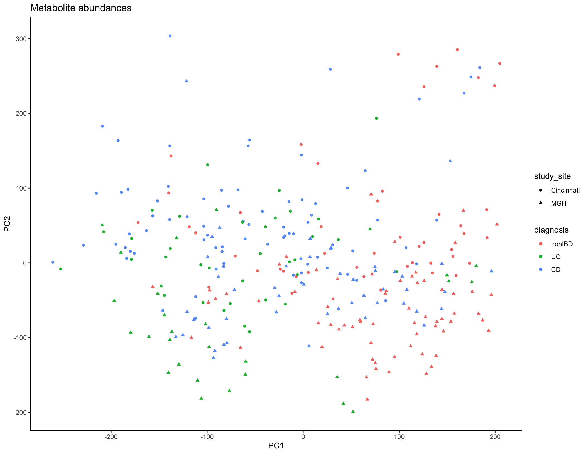
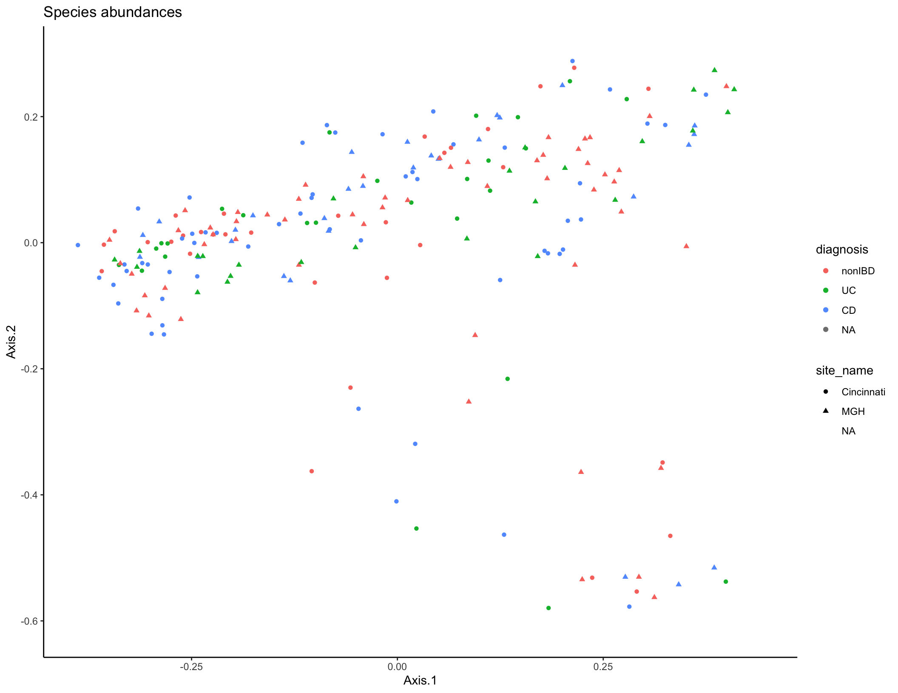

Multi-omics Analysis
Cecilia Noecker
Spring 2021
This is the hands-on segment of the multi-omics analysis tutorial. The data analyzed below are described in Franzosa et al Nature Microbiology, 2019. Please visit the Setup page for some initial steps to complete prior to the tutorial.
1 Descriptive analysis
What is the overall landscape of our dataset?
Typically, you would start the analysis of a new dataset (after data cleaning and QC) with some initial descriptive analyses to summarize the overall trends in the data across all features (taxa/genes/metabolites). The tools most commonly used for this task are similar to those you’ve already seen in Jordan’s previous session on 16S rRNA sequencing: dimensional reduction and ordination (PCA/PCoA/NMDS), visualization of feature abundances across samples (heatmaps, line plots, etc.), and statistical modeling to assess which features are differentially abundant between experimental groups. In the interest of time, we won’t work through these analyses together, but you can ordination plots based on microbiome taxa (PCoA, Bray-Curtis dissimilarity) and metabolite features (PCA) below. Some additional questions and suggestions for performing these analyses are included at the end of the document if you want to continue to explore this dataset.
library(tidyverse)
library(tidymodels)
library(vegan)
library(ape)
## Import metadata
metadata_cinc <- read_tsv("data/subject_metadata_Cincinnati.tsv") %>% filter(data_type == "metabolomics") %>% mutate(diagnosis = factor(diagnosis, levels = c("nonIBD", "UC", "CD")))
metadata_mgh <- read_tsv("data/subject_metadata_MGH.tsv") %>% filter(data_type == "metabolomics") %>% mutate(diagnosis = factor(diagnosis, levels = c("nonIBD", "UC", "CD")))
## Import metabolite data
metabolites_cinc <- read_tsv("data/metabolite_profile_Cincinnati.tsv") %>%
rename_with( ~ gsub("_\\(.*", "", gsub(" |\\/", "_", .x))) %>%
pivot_longer(names_to = "SampleID", cols = contains("HSM")) %>%
left_join(select(metadata_cinc, SampleID, SubjectID, diagnosis), by = "SampleID") %>%
mutate(value_zeros = ifelse(is.na(value), 0, value))
metabolites_mgh <- read_tsv("data/metabolite_profile_MGH.tsv") %>%
rename_with( ~ gsub("_\\(.*", "", gsub(" |\\/", "_", .x))) %>%
pivot_longer(names_to = "SampleID", cols = contains("MSM")) %>%
left_join(select(metadata_mgh, SampleID, SubjectID, diagnosis), by = "SampleID") %>%
mutate(value_zeros = ifelse(is.na(value), 0, value))
metabolites_all <- rbind(mutate(metabolites_cinc, study_site = "Cincinnati"), mutate(metabolites_mgh, study_site = "MGH"))
## Filter features present in fewer than 5 samples and log-transform values
bad_feats <- metabolites_all %>% group_by(Compound) %>%
summarize(numVar = length(unique(value_zeros))) %>%
filter(numVar < 5) %>% pull(Compound)
metabolites_all <- filter(metabolites_all, !Compound %in% bad_feats) %>% mutate(logValueZeros = log10(value_zeros+1))
#Format for PCA, calculate PCA, plot
met_pr <- pivot_wider(metabolites_all, names_from = Compound, values_from = logValueZeros, id_cols= c(SampleID, study_site, diagnosis), values_fill = 0)
met_pca <- met_pr %>% column_to_rownames(var = "SampleID") %>% select(-study_site, -diagnosis) %>% as.matrix() %>% prcomp()
met_summary <- as_tibble(met_pca$x, rownames = NA) %>% rownames_to_column(var = "SampleID") %>% select(SampleID, PC1, PC2, PC3, PC4) %>% left_join(distinct(select(metabolites_all, SampleID, diagnosis, study_site)))
met_plot <- ggplot(met_summary, aes(x = PC1, y = PC2, color = diagnosis, shape = study_site)) + geom_point(size = 1.5) + ggtitle("Metabolite abundances") + theme_classic()
met_plot
met_vars <- met_pca %>% tidy(matrix = "pcs")
# Remove large datasets
rm(metabolites_all, metabolites_cinc, metabolites_mgh)
### Now do Taxa abundances
taxa_cinc <- read_tsv("data/taxa_profile_Cincinnati.tsv") %>%
pivot_longer(names_to = "SampleID", cols = -Feature) %>%
left_join(select(metadata_cinc, site_name, SampleID, SubjectID, diagnosis), by = "SampleID") # %>% mutate(value_zeros = ifelse(is.na(value), 0, value))
taxa_mgh <- read_tsv("data/taxa_profile_MGH.tsv") %>%
pivot_longer(names_to = "SampleID", cols = -Feature) %>%
left_join(select(metadata_mgh, site_name, SampleID, SubjectID, diagnosis), by = "SampleID") #%>%
#mutate(value_zeros = ifelse(is.na(value), 0, value))
taxa_all <- rbind(taxa_cinc, taxa_mgh)
#Get species-level abundances, calculate Bray-Curtis dissimilarities between samples
bray_dist <- taxa_all %>% select(-diagnosis,-SubjectID, -site_name) %>%
filter(grepl("s__.*", Feature)|Feature=="UNKNOWN") %>%
pivot_wider(names_from = "Feature", values_from = "value", values_fill = 0) %>%
column_to_rownames("SampleID") %>%
as.matrix() %>%
vegdist(method = "bray")
#Perform principal coordinates analysis
pcoa1 <- pcoa(bray_dist)
pcoa_dat <- pcoa1$vectors %>% as_tibble(rownames = NA) %>% rownames_to_column("SampleID") %>% left_join(distinct(select(taxa_all, SampleID, SubjectID, diagnosis, site_name)))
#Visualize PCoA
species_plot <- ggplot(pcoa_dat, aes(x = Axis.1, y = Axis.2, color = diagnosis, shape = site_name)) + geom_point(size = 1.5) + ggtitle("Species abundances") + theme_classic()
species_plot
2 Using reaction databases to link taxa and genes with metabolites
We’ll start with a relatively narrow question. Can IBD-shifted metabolites be linked to variation in relevant microbial genes and pathways? For this analysis we will focus on the metabolites that have been assigned a known compound identification based on library search. Our main goal will be to demonstrate on a small scale how to query databases to do this kind of reference-informed integrative analysis.
First, we’ll load packages and read in data. We will use a few different packages for this section: the tidyverse suite for data manipulation and visualization, the tidymodels package for formatting our differential abundance results, the webchem package for mapping between different types of metabolite IDs, the KEGGREST package for querying the KEGG database, and the patchwork package for laying out plots with multiple panels.
library(tidyverse)
library(tidymodels)
library(webchem)
library(KEGGREST)
library(patchwork)
theme_set(theme_classic())
metadata <- read_tsv("data/subject_metadata_Cincinnati.tsv") %>% filter(data_type == "metabolomics") %>% mutate(diagnosis = factor(diagnosis, levels = c("nonIBD", "UC", "CD")))
metabolites_cinc <- read_tsv("data/metabolite_profile_Cincinnati.tsv") %>%
rename_with( ~ gsub("_\\(.*", "", gsub(" |\\/", "_", .x))) %>%
filter(!is.na(Metabolite)) %>%
pivot_longer(names_to = "SampleID", cols = contains("HSM")) %>%
left_join(select(metadata, SampleID, diagnosis), by = "SampleID") %>%
mutate(value_zeros = ifelse(is.na(value), 0, value))
## Get some initial summary statistics for this dataset
metabolites_cinc %>% summarize(min(value_zeros), mean(value_zeros), median(value_zeros), max(value_zeros))
length(unique(metabolites_cinc$Metabolite))
## Let's log transform these metabolite values
metabolites_cinc <- metabolites_cinc %>% mutate(logValue = log1p(value_zeros))
metabolites_cinc %>% summarize(min(logValue), mean(logValue), median(logValue), max(logValue))Next, let’s run a differential abundance analysis to identify which of compounds are shifted in abundance in either CD or UC compared to controls. For simplicity, we will fit multiple-hypothesis-adjusted linear models of our log-transformed metabolite intensities.
##
ibd_diff_abundance <- metabolites_cinc %>%
group_by(Compound, Method, m_z, RT, HMDB, Metabolite) %>%
do(tidy(lm(.$logValue ~ .$diagnosis))) %>%
filter(term != "(Intercept)") %>%
pivot_wider(id_cols = c("Compound", "Method", "m_z", "RT", "HMDB", "Metabolite"), names_from = "term", values_from = c("statistic", "p.value")) %>%
rename_with( ~ gsub("_.$diagnosis", "", .x, fixed = T)) %>%
mutate(AdjustedPValCD = p.adjust(p.valueCD), AdjustedPValueUC = p.adjust(p.valueUC)) %>%
arrange(AdjustedPValCD)
View(ibd_diff_abundance)
top_cd_mets <- filter(ibd_diff_abundance, AdjustedPValCD < 0.01)
top_cd_mets %>% ungroup() %>% count(statisticCD > 0) # Most of these are increased in CDLet’s plot a few of these.
metabolites_cinc %>% filter(Metabolite %in% pull(top_cd_mets[1:8,], Metabolite)) %>%
ggplot(aes(x = diagnosis, y = logValue)) + geom_boxplot(outlier.shape = NA) + geom_jitter(width = 0.25, size = 0.4) +
facet_wrap(~Metabolite, scales = "free_y")We are going to link these compounds to relevant genes and taxa. To do so, we are going to convert the HMDB compound IDs to KEGG compound IDs, and then query the KEGG database for reactions linked to those compounds.
While the database query runs, think about the question: What hypotheses are we testing in this analysis?
## Fix HMDB IDs
top_cd_mets <- top_cd_mets %>% mutate(HMDB2 = gsub("*", "", gsub("HMDB", "HMDB00", HMDB), fixed = T))
#This will take a minute
top_cd_mets <- top_cd_mets %>%
head(n = 50) %>%
mutate(KEGG = cts_convert(query = gsub("*", "", HMDB2, fixed = T), from = "Human Metabolome Database", to = "KEGG")) ##%>% ungroup() %>% mutate(KEGG = map(Metabolite, function(x) { names(keggFind(database = "compound", query = x))}))Next, we will take our vector of KEGG compounds and retrieve a set of EC number enzymes and reactions known to be linked to those compounds.
# Get KEGG compounds
kegg_comps <- top_cd_mets %>% filter(!is.na(KEGG)) %>%
unnest(cols = c(KEGG))
kegg_comps <- kegg_comps %>%
mutate(ECRxn = map(KEGG, function(x) {
keggLink(target = "enzyme", source = x)})) %>%
unnest(cols = c(ECRxn))
View(kegg_comps)
kegg_comps <- kegg_comps %>% mutate(ECRxn = gsub("ec:", "", ECRxn))Our metagenome data has been processed to quantify gene abundances linked to EC numbers, so now we can import that data and see what’s happening with these genes of interest. This is a large file so for now, we are going to filter to just the EC numbers we’re already interested in.
ecs_cinc <- read_tsv("data/ECnumber_profile_Cincinnati.tsv") %>%
mutate(EC2 = gsub(": .*", "", EC)) %>%
filter(EC2 %in% kegg_comps$ECRxn) %>%
filter(!grepl(":", Taxon)) %>%
pivot_longer(cols = contains("SM"), names_to = "SampleID", values_to = "GeneAbundance") %>%
mutate(GeneAbundance = as.numeric(GeneAbundance)) %>%
inner_join(metadata)
length(unique(ecs_cinc$EC2))
length(unique(ecs_cinc$Taxon))
ecs_cinc <- ecs_cinc %>% left_join(select(ungroup(kegg_comps), Metabolite, statisticCD, p.valueCD, KEGG, ECRxn), by = c("EC2" = "ECRxn"))Let’s plot one example compound and its linked reactions.
agmatine_abund <- filter(metabolites_cinc, Metabolite == "agmatine")
ecs_agm <- filter(ecs_cinc, Metabolite == "agmatine") %>%
arrange(desc(GeneAbundance))
gene_met_data <- left_join(ecs_agm, agmatine_abund)
highest_taxa <- ecs_agm %>% group_by(Taxon) %>%
summarize(tot = sum(GeneAbundance)) %>%
arrange(desc(tot)) %>% head(n = 10) %>% pull(Taxon)
gene_met_data <- gene_met_data %>% mutate(Taxon2 = ifelse(Taxon %in% highest_taxa, Taxon, "Other"))
samp_order <- agmatine_abund %>% arrange(logValue) %>% pull(SampleID)
gene_met_data <- gene_met_data %>% mutate(SampleID = factor(SampleID, levels = samp_order))
gene_plot <- ggplot(gene_met_data, aes(x = SampleID, fill = Taxon2, y = GeneAbundance)) + geom_bar(stat = "identity", position = "stack") + facet_grid(EC~diagnosis, scales = "free_x", space = "free_x") + scale_fill_viridis_d() + theme(axis.text.x = element_blank()) #+ geom_point(aes(y = value))
met_plot <- ggplot(gene_met_data, aes(x = SampleID, y = logValue)) + geom_point() + facet_grid(Metabolite~diagnosis, scales = "free_x", space = "free_x") + theme(axis.text.x = element_blank())
gene_plot + met_plot + plot_layout(nrow = 2, heights = c(3,1))What other ideas do you have of how we could improve this visualization or otherwise present this data? How could we systematically test whether these gene abundances are associated with the metabolite in question?
Finally, let’s query for some additional information about the most abundant associated gene family.
2.1 Other notes and follow-up questions
You can extend this type of analysis and visualization by installing the
pathviewpackage to visualize data on top of KEGG pathway maps.You can do a slightly different and more systematic version of this analysis (What microbial genes and taxa appear to be responsible or responsive to linked metabolite variation?) using a tool I developed during my PhD, MIMOSA2.
We could alternatively link metagenomic and metabolomic data at the level of KEGG or Metacyc pathways. What are some tradeoffs in analyzing this data at the gene vs pathway levels?
What are the limitations of using this type of integrative approach? How could we strengthen this analysis?
3 Predictive analysis
An alternative (and complementary!) approach to multi-omic analysis is to instead treat our dataset as just a “bag of features”: where we don’t assume anything about any specific feature’s meaning but simply apply high-dimensional analysis techniques to describe data structure and identify features possibly linked to our outcomes of interest. We’ll explore this now, using a machine learning analysis to evaluate what features best predict disease status.
3.1 Classification
In this analysis, we will investigate the questions: - How well do metabolomics and/or metagenomic features predict IBD diagnosis? - Can we identify biomarkers that are signatures of diagnosis?
These are classification questions - to answer them, we want to obtain a predictive model that can accurately predict what category (e.g. control or IBD) any sample belongs to, on the basis of its high-dimensional data. Then we will inspect the models to evaluate which features in our large dataset were most informative for those predictions.
We will use a commonly used type of machine learning model called a random forest. “Random Forest” describes an algorithm that combines predictions from many decision trees, each constructed from randomly sampled subsets of the data. Averaged together, these make better predictions than a single tree.

Machine learning workflows can get quite convoluted, in large part to limit the risk of overparameterization and overfitting to dataset idiosyncrasies. (Overfitting is very easy to do when you have thousands of possible predictors.) In this analysis, we’ll work through a relatively standard workflow, using the tidymodels suite of packages:
Define the model choice and how we will split up our data for training and testing the model.
Use cross-validation to select hyperparameters for the model and get an initial idea of model accuracy (more on this below).
Fit a final model and examine which features are most predictive.
Test the model’s predictive ability on a new set of data.
For these models, we will use a 5-fold cross-validation scheme to select the best model hyperparameters, and then we will calculate a final testing accuracy in an independent dataset - in this case, the samples from another study site cohort. k-fold cross-validation works by fitting k different models, each trained on 80% of the training data and tested on the remaining 20%, and then calculating the final performance statistics across all 5 folds.

rm(list = ls())
library(tidymodels)
library(vip)
metadata <- read_tsv("data/subject_metadata_Cincinnati.tsv") %>% filter(data_type == "metagenomics")
glimpse(metadata)
# Set up our taxonomic data as a sample x feature matrix
## Set up 5 divisions of the Cincinnati samples
taxa_cin <- read_tsv("data/taxa_profile_Cincinnati.tsv") %>% pivot_longer(names_to = "SampleID", cols = -Feature) %>% pivot_wider(names_from = "Feature") %>% left_join(select(metadata, SampleID, diagnosis), by = "SampleID")
colnames(taxa_cin) <- gsub("|", "_", colnames(taxa_cin), fixed = T) %>% gsub(pattern = "]", replacement = "", fixed = T) %>% gsub(pattern = "[", replacement = "", fixed = T)
taxa_cin <- mutate(taxa_cin, diagnosis = factor(ifelse(diagnosis == "nonIBD", "nonIBD", "IBD"), levels = c("IBD", "nonIBD")))Step 1: Set up training data scheme and model specification
Our first random forest will learn a model to predict IBD diagnosis (to start, just IBD or control) on the basis of taxonomic abundances.
# Set up cv scheme
folds1 <- vfold_cv(taxa_cin %>% select(-SampleID), v = 5, strata = "diagnosis")
## Define model
# Can also set a variety of other parameters here
rand_model <- rand_forest(trees = tune(), mtry = tune()) %>%
set_engine("ranger", importance = "impurity") %>%
set_mode("classification") %>%
translate()
# Grid of possible parameters for our model
tree_grid <- grid_regular(mtry(range = c(1, 200)), trees(range = c(100, 800)), levels = 3)
## Our overall workflow will be fitting random forests to predict diagnosis
rf_wf <-
workflow() %>%
add_model(rand_model) %>%
add_formula(diagnosis ~ .)Step 2: Use cross-validation to select hyperparameters for the model and get an initial idea of model quality
We will use cross-validation performance to choose parameters for our model. Random forests have 2 main parameters (there are also others that we will leave as the defaults): the number of decision trees to make up the whole model (num.trees), and the number of variables randomly selected for each tree (mtry). The optimal values for these depend on dataset characteristics. We will pick the values that perform the best from a selection.
We’ll evaluate our predictive models using 2 common metrics: - Accuracy: total correct predictions divided by total predictions or samples - Area under the ROC curve (AUC): This is a commonly used metric in classification analyses. The predictions produced by the model are actually probabilities: the estimated probability that that particular sample belongs to each class. An ROC curve accounts for the idea that we could use probability cutoffs to assign a sample to each class.
## This will take a little while
rf_fit_cv <-
rf_wf %>%
tune_grid(resamples = folds1,
grid = tree_grid, control = control_grid(save_pred = T))
## Let's look at the ROC curve from the predictions from each model
cv_predictions <- collect_predictions(rf_fit_cv)
cv_predictions %>% conf_mat(truth = diagnosis, .pred_class)
cv_predictions %>% filter(.config == "Model1") %>%
roc_curve(truth = diagnosis, .pred_IBD) %>% autoplot()
cv_predictions %>% group_by(.config) %>%
roc_curve(truth = diagnosis, .pred_IBD) %>% ggplot(aes(x = 1 - specificity, y = sensitivity, color = .config)) + geom_line()We’ll make a plot of performance across all of our different parameter combinations to choose what to use for our final model:
# CV accuracy with our different parameter combinations
collect_metrics(rf_fit_cv) %>% pivot_wider(names_from = ".metric", values_from = "mean", id_cols = c("mtry", "trees", ".config"))
rf_fit_cv %>%
collect_metrics() %>%
ggplot(aes(x = trees, y = mean, color = factor(mtry))) +
geom_line(size = 1.5, alpha = 0.6) +
geom_point(size = 2) +
facet_wrap(~ .metric, scales = "free", nrow = 2) +
scale_x_log10(labels = scales::label_number()) +
scale_color_viridis_d(option = "plasma", begin = .9, end = 0)
rf_fit_cv %>% show_best("roc_auc")
best_rf <- rf_fit_cv %>%
select_by_one_std_err(metric = "roc_auc", mtry, trees)Step 3: Fit final model and examine which features are most predictive
Now that we’ve selected reasonable parameters, we can fit our final training model and examine which features appear to be most informative for predicting IBD status in this dataset.
#Tell the workflow to only use the best model parameters now
final_wf <-
rf_wf %>%
finalize_workflow(best_rf)
# Fit the model to the whole dataset
final_rf <-
final_wf %>%
fit(data = taxa_cin)
#Look at the final training AUC values
final_pred <- bind_cols(select(taxa_cin, diagnosis),
predict(final_rf, taxa_cin, type = "class"),
predict(final_rf, taxa_cin, type = "prob"))
final_pred %>% conf_mat(truth = diagnosis, .pred_class)
final_pred %>%
roc_curve(truth = diagnosis, .pred_IBD) %>% autoplot()
roc_auc(final_pred, truth = diagnosis, .pred_IBD) Looks like a pretty strong model! We can also look at which particular taxa tended to be most informative of IBD status in this final model. This is quantified here using a metric called Gini impurity.
Step 4: Test final model on a new set of data
Even though our model seems to perform really well, this is almost always true on a training dataset (the model is optimized for that after all). To really get a sense of whether these particular combinations of taxa are informative for predicting IBD status, we need to apply our model to a totally new dataset. In this case, we will try predicting IBD status with the same model (same parameters, same final fit decision trees) on a new, independent dataset - the samples from the MGH study site.
metadata_mgh <- read_tsv("data/subject_metadata_MGH.tsv")
taxa_mgh <- read_tsv("data/taxa_profile_MGH.tsv") %>% pivot_longer(names_to = "SampleID", cols = -Feature) %>% pivot_wider(names_from = "Feature") %>% left_join(select(metadata_mgh, SampleID, diagnosis), by = "SampleID")
colnames(taxa_mgh) <- gsub("|", "_", colnames(taxa_mgh), fixed = T) %>% gsub(pattern = "]", replacement = "", fixed = T) %>% gsub(pattern = "[", replacement = "", fixed = T)
taxa_mgh <- mutate(taxa_mgh, diagnosis = factor(ifelse(diagnosis == "nonIBD", "nonIBD", "IBD"), levels = c("IBD", "nonIBD")))
taxa_mgh <- taxa_mgh %>% bind_cols(
predict(final_rf, new_data = taxa_mgh),
predict(final_rf, new_data = taxa_mgh, type = "prob"))
roc_curve(taxa_mgh, truth = diagnosis, .pred_IBD) %>% autoplot()
roc_auc(taxa_mgh, truth = diagnosis, .pred_IBD)
taxa_mgh %>% conf_mat(truth = diagnosis, .pred_class)
taxa_mgh %>% summarize(Accuracy = sum(diagnosis == .pred_class)/length(diagnosis))3.2 Follow up questions
Try this with another data type: Does the metabolite data predict disease subtype more accurately than the taxonomic data? What about both datasets together, and/or some of the additional metadata such as sex and age?
Try another formulation of the problem: what about a multi-class classifier to distinguish UC, CD, and nonIBD?
How well do you think a model would perform based solely on the 10 or 15 most important taxa?
Do you think this training-testing setup was a good approach to prevent overfitting and over-interpretation? How could we refine this strategy?
Do you think the random forest algorithm is a good choice of classification tool for this dataset? Why or why not? Look into support vector machines and elastic net logistic regression as alternative approaches.